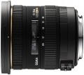

器材库 > APS画幅镜头 > DC EX 10-20/3.5 HSM

详细规格
镜头类型
广角变焦镜头
发布日期
2009-03-03
焦距
10mm-20mm
等效35mm画幅焦距
15mm-30mm
最大光圈
f/3.5
最小光圈
f/22
视角（对角）
102.4-63.8
镜头结构
13片/10组
非球面镜片
4片
低/超低色散镜片
3片
光圈叶片
7片
最近对焦距离
24cm
最大放大倍率
0.15
驱动马达
HSM（超声波马达）
滤镜口径
82mm
镜头卡口
Canon EF, Minolta/Konica-Minolta/Sony AF, Nikon AF, Pentax AF, Sigma SA
防抖
否
颜色
黑色
尺寸
87.3×88.2mm
重量
520g
附件
花形遮光罩 LH873-01
备注
内对焦设计
0573大黄蜂2012-04-11 19:044.92 分
操作性 5.00耐用性 4.50性价比 5.00解像力 5.00色彩还原 5.00机械结构 5.00
光影拍客2011-09-16 13:404.33 分
操作性 4.50耐用性 4.50性价比 4.00解像力 4.50色彩还原 4.00机械结构 4.50
色迷迷色2011-06-30 17:194 分
操作性 4.00耐用性 4.50性价比 4.50解像力 4.00色彩还原 3.00机械结构 4.00
高压线2011-02-23 17:424.5 分
操作性 5.00耐用性 4.00性价比 4.50解像力 4.50色彩还原 4.00机械结构 5.00
老舒师2010-12-08 13:334.92 分
操作性 5.00耐用性 5.00性价比 5.00解像力 5.00色彩还原 4.50机械结构 5.00
bannerx2010-06-09 10:484.17 分
操作性 4.50耐用性 4.00性价比 4.50解像力 3.50色彩还原 4.00机械结构 4.50
BSWINE2010-04-11 12:404.75 分
操作性 5.00耐用性 5.00性价比 5.00解像力 4.50色彩还原 4.50机械结构 4.50
大画无形2010-01-02 20:154.42 分
操作性 4.50耐用性 5.00性价比 5.00解像力 4.00色彩还原 3.50机械结构 4.50
wyf2009-10-10 01:13
产品图 / 样片
外观图